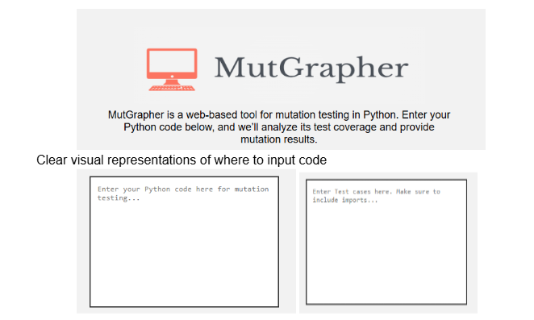
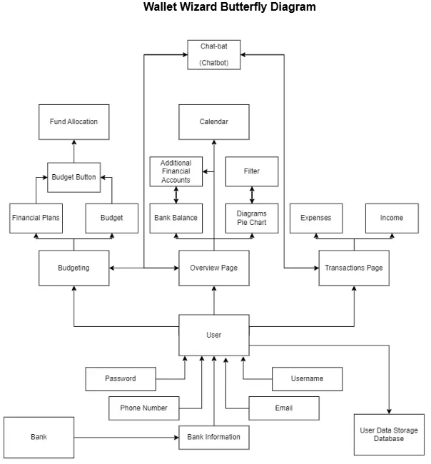

Engineering Course Projects:
Mutgrapher (CSI 4370 - Software Verification/Testing)
- Developed a mutation testing platform leveraging Flask and MutPy for Python unit testing coverage analysis.
-
Implemented interactive data visualization tools using Statsfic and for control flow graph (CFG) analysis.
Enabled users to analyze, test, and download mutation reports for Python code.

Wallet Wizard (CIS 1512 - Software Engineering)
- Developed a web-based personal finance tracker that allows users to input income, create budgets,
allocate funds, and view spending through charts and multiple interactive pages.
- Built the front-end user interface using HTML and JavaScript, creating navigation, forms,
and financial visualizations while integrating with a Python-based backend
- Worked in an Agile team environment using GitHub, Scrum roles, and weekly sprint meetings
to plan features, track tasks, and deliver a complete software engineering project.

Budget Buddy - A finance tracking web application (CSI - 2999)
- Developed a responsive web application that allows users (company owners) to track their income, expenses, and savings goals.
-
Implemented front-end features using HTML, CSS, and JavaScript to create interactive forms, charts, and navigation menus.
-
Collaborated with a team of 5 students using GitHub for version control and Agile methodologies to plan and deliver the project.